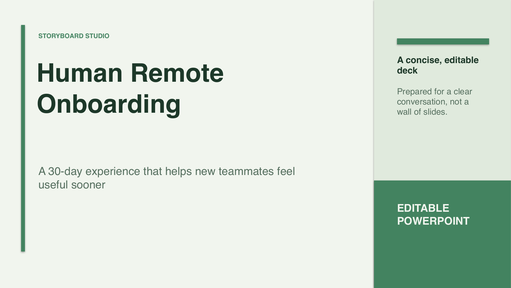

Name the decision
Make the choice explicit before visual polish can obscure it.
LOCAL-FIRST DECISION-DECK STUDIO
Turn a private decision brief into an inspectable story. Run deterministic narrative checks, keep evidence gaps visible, then export a native PowerPoint and a receipt you can verify locally.
THE PROBLEM
Generic generators optimize the slide pile. Storyboard Studio is for product and operations leads, consultants, and technical teams who need the decision, trade-off, evidence, owner, and next action to survive review — without uploading a private brief by default.
It deliberately does not replace PowerPoint, invent research, or become a cloud collaboration suite. Its narrow job is to make the argument inspectable before design momentum turns an unclear decision into a polished artifact.
REAL WORKFLOW PROOF
This 25-second app-only capture uses the included synthetic onboarding brief. It shows a Doctor finding, an author fix, PowerPoint export, and native text editing.
Open the exact synthetic decision brief used for the demo.
View brief ↗See the diffable story and author-owned evidence trail.
View story JSON ↗Download the native deck and verify its receipt hashes locally.
Open proof bundle ↗Accessible demo transcript ↗ · Synthetic example; no customer data or testimonial claims.
NATIVE OUTPUT
Supported text, shapes, tables, charts, notes, and local images remain independent objects rather than a screenshot of a slide.

THE WORKFLOW
Add the audience, constraints, options, trade-offs, evidence, owner, and next step.
Run deterministic checks for weak progression, unsupported claims, repetition, density, and missing ownership.
Download native `.pptx`, `.story.json`, and `.receipt.json` files that can be reviewed and regenerated.
EXPLICIT BOUNDARIES
The no-key compiler, Doctor, renderer, and receipt verification run on your machine.
Gemini and loopback model adapters are optional per draft; provider, network state, and fallback are disclosed.
A receipt verifies hashes and internal references. The author still owns factual verification and source quality.
RUN IT LOCALLY
Clone the repository, create the verified environment, and open the local studio. Python 3.10+ is required; PyPI installation is not published yet.
git clone https://github.com/OthmaneBlial/Storyboard-Studio.git
cd Storyboard-Studio
make setup
make runThe latest stable release is v0.2.0. The guided decision story, Narrative Doctor, benchmark, and Receipt workflow shown here are on main for the next release. This showcase is a product tour, not a hosted editor.